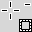
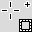
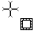
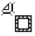
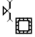
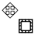
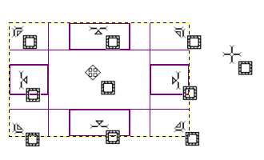

The Rectangle Selection tool is designed to select rectangular regions of the active layer: it is the most basic of the selection tools, but very commonly used. For information on selections and how they are used in GIMP see Selections; for information on features common to all selection tools see Selection Tools.
This tool is also used for rendering a rectangle on an image. To render a filled rectangle, create a rectangular selection, and then fill it using the Bucket Fill tool. To create a rectangular outline, the simplest and most flexible approach is to create a rectangular selection and then stroke it.
There are different possibilities to activate the tool:
-
From the main menu: → → .
-
By clicking the tool icon
 in the Toolbox.
in the Toolbox.
-
By pressing the R keyboard shortcut.
![[Note]](images/note.png)
|
Note |
|---|---|
|
See Selection Tools for help with modifier keys that affect all these tools in the same way. Only effects options that are specific to this tool are explained here. |
- Ctrl
-
Pressing the Ctrl key after starting your selection, and holding it down until you are finished, causes your starting point to be used as the center of the selected rectangle, instead of a corner. Note that if you press the Ctrl key before starting to make the selection, the resulting selection will be subtracted from the existing selection. The cursor becomes

- Shift
-
If you press the Shift key before starting the selection, the resulting selection will be added to the existing one. The cursor becomes

Pressing the Shift key after starting your selection, toggles the Fixed option, and holding it down until you are finished, will constrain the selection to a square, if it is your first selection. Later, with the default Aspect Ratio , your selection will respect the aspect ratio of the previous selection.
- Ctrl+Shift
-
Pressing both keys after starting your selection combines the two effects, giving you a square selection centered on your starting point. Note that pressing these keys before starting your selection intersects the resulting selection with the existing one and the pointer change shape accordingly:
When this tool is selected the mouse pointer is displayed like this:

When the pointer is moving on the canvas, the pointer and selection aspects change:
- outside the selection it looks like previously; this allows to design a new selection but will erase the existing one if this isn't combined with an action on the relevant key to add or subtract another selection as described in the previous paragraph.
- within selection peripheral parts, the mouse pointer changes into
various shapes when overflying rectangular sensitive and clearly marked
areas. These handles allow you to resize the
selection. In selection corners the pointer changes into a shape
according to the context; for instance in the low right corner it
becomes:
 
- inside selection central area the mouse pointer looks like usual for
object manipulation, i.e.:

Moreover, if you have not unchecked the Highlight option, your work will be easier because what is out the selection will be darkest than what is in the selection, and then the selection seems highlighted.
![[Tip]](images/tip.png)
|
Tip |
|---|---|
|
If you use moving keys you can move the selection or modify its size by one pixel step. If you use it in combination with Shift you can move it by a 25 pixel step. |
Figure 14.7. Sensitive selection areas

Display of all possible pointers in function of their localization with respect to the selection area.
After creating and modifying the selection, you will have to exit this editing mode (and commit any changes). You can do this with a single click inside the selection or by pressing the Enter key. Or you can just use a non-selection tool and, for example, fill or paint the selection.
Normally, tool options are displayed in a window attached under the Toolbox as soon as you activate a tool. If they are not, you can access them from the main menu through → → which opens the option window of the selected tool. The available tool options can also be accessed by double clicking the corresponding tool icon in the Toolbox.
- Mode, Antialiasing, Feather edges
-
Note See Selection Tools Options for help with options that are common to all these tools. Only options that are specific to this tool are explained here.
- Rounded corners
-
If you enable this option, a slider appears. You can use this to adjust the radius that is used to round the corners of the selection.
- Expand from center
-
If you enable this option, the point the selection is started by pressing the mouse button is used as center of the selected area.
- Fixed
-
This menu allows you the option of constraining the shape of the rectangle in different ways.
- Aspect ratio
-
This option allows you to design and resize the selection while keeping the aspect ratio fixed and written within the relevant box. By default the ratio is 1:1 (so we have a square) but it can be changed. With the two little landscape and picture icons, you can invert this ratio.
- Width
-
With this choice you can fix the width of the selection.
- Height
-
With this choice you can fix the height of the selection.
- Size
-
With this choice you can fix the width and height of the selection.
- Position
-
These two text fields contain the current horizontal and vertical coordinates of the upper left corner of the selection. You can use these fields to adjust the selection position precisely.
- Size
-
These two text fields contain the current width and height of the selection. You can use these fields to adjust the selection size precisely.
- Highlight
-
If you enable this option, the selected area is emphasized by a surrounding mask to make visual selection much easier.
- Guides
-
With this menu you can select the type of guides that is shown within the selection to make the creation of a selection easier, respecting Photo composition rules.
Six options are available:
-
No Guides
-
Center lines
-
Rule of thirds
-
Rule of fifths
-
Golden sections
-
Diagonal lines
-
- Auto Shrink
-
This option is active when a rectangle selection is drawn. Clicking on the button will make the selection automatically shrink to the nearest rectangular shape including elements in the selection. The algorithm for finding the best rectangle to shrink to is “intelligent”, which in this case means that it sometimes does surprisingly sophisticated things, and sometimes does surprisingly strange things. In any case, if the region that you want to select has a solid-colored surround, auto-shrinking will always pick it out correctly. Note that the resulting selection does not need to have the same shape as the one you sweep out.
- Shrink merged
-
If Sample Merged is also enabled, then Auto Shrink will use the pixel information from the visible display of the image, rather than just from the active layer.
For more information, see the Glossary entry.